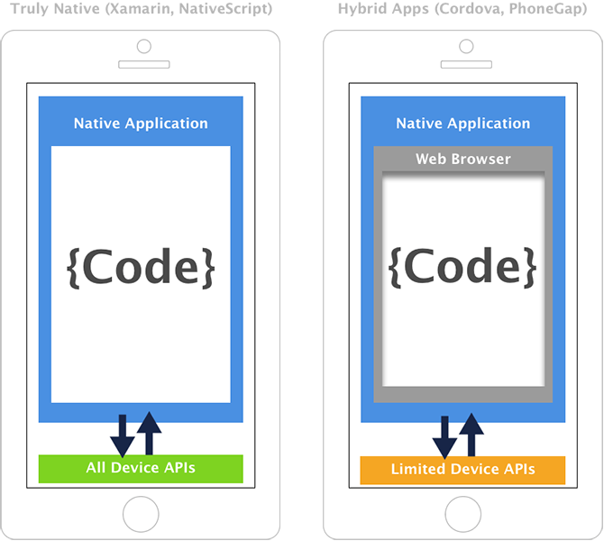
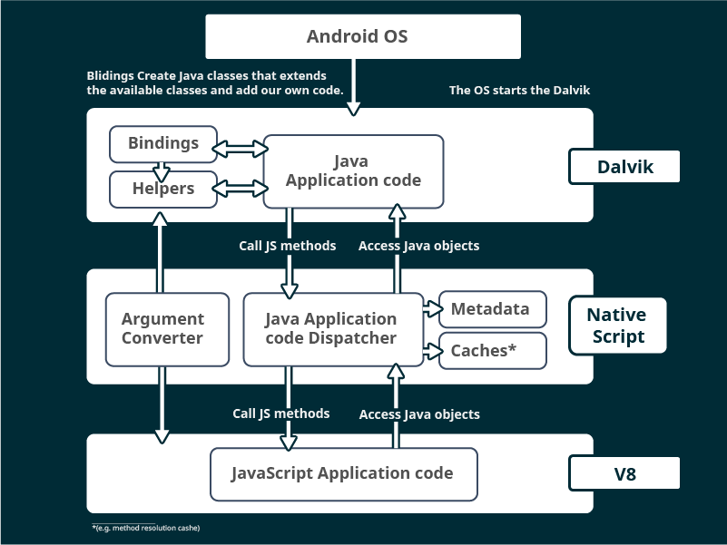
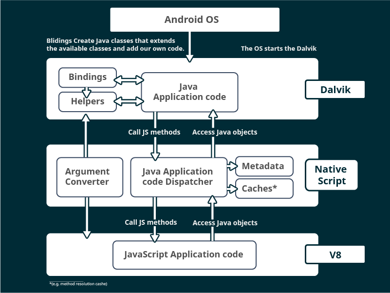
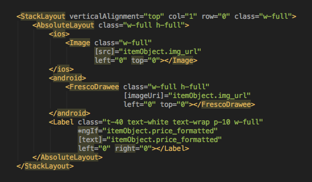

Angular Native
Пару слов, о чем-то новом...
Юрий Лучанинов / mobidev.biz
и о реальной жизни
Из чего состоит...
 +
+
 =
=

Что такое NativeScript?
Идея: Пишем на JS нативные приложения
Цель: 100% нативная производительность?
Цель: Доступ к 100% нативного функционала.
100% нативной функциональноти
Как это работает ?
Как это работает ?
 

Как это работает ?
- The JavaScript VM evaluates the code
- The Bindings will determine the corresponding native method to call
- The Marshaling service will convert the JavaScript String to a java.lang.String object
- The result of the function call will be a custom JavaScript Object serving as a proxy to the native java.io.File object created on the Android side. When a method is called on this proxy it is delegated to the underlying native object instance.
Как это выглядит в коде ?
Пример из документации:
// iOS
var array = new NSMutableArray();
array.addObject(new NSObject());
// Android
var context = ...;
var button = new android.widget.Button(context);
button.setText("My Button"); // "My Button" is converted to java.lang.String
Пример из жизни:
var listView = this.page.getViewById("list_view");
listView.on(ListView.itemLoadingEvent, (args: ItemEventData)=> {
if (args.ios) { // disable select colors if it iOS
args.ios.selectionStyle = UITableViewCellSelectionStyle.UITableViewCellSelectStyleNone;
}
});А в чем отличие Ангуляра ?
а ни в чем...
Кроме:
И волшебные постфиксы...
- *.android.*
- *.ios.*
100% нативного перформанса
Last update: March.2016
Requires: iOS 8+ device(iPhone 5s)
- Native - Xcode 6.3.2
- NativeScript - NativeScript for iOS 1.6.0
- Xamarin - Xamarin Studio 5.10.2
- Appcelerator - Appcelerator CLI 4.1.0
- Cordova - Apache Cordova 5.1.1
- React Native - 0.19
Startup Time
Blank app with a single button.
| Platform | Run 1 | Run 2 | Run 3 |
|---|---|---|---|
| Native | 111ms | 105ms | 108ms |
| React Native | 358ms | 361ms | 353ms |
| Xamarin Forms | 484ms | 471ms | 469ms |
| Cordova | 613ms | 612ms | 609ms |
| NativeScript | 674ms | 672ms | 670ms |
Primitives
The marshaling of numbers between JavaScript and native. It is for 1 000 000 calls to
native code.
| Platform | Run 1 | Run 2 | Run 3 |
|---|---|---|---|
| Native | 5ms | 4ms | 4ms |
| Xamarin | 27ms | 27ms | 28ms |
| NativeScript | 989ms | 998ms | 980ms |
| Appcelerator | 34444ms | 33969ms | 35916ms |
| React Native | 130600ms | 125140ms | 127220ms |
| Cordova | 351420ms | 357940ms | 356740ms |
Strings
The marshaling of strings between JavaScript and native. It is for 100 000 calls to
native code.
| Platform | Run 1 | Run 2 | Run 3 |
|---|---|---|---|
| Native | 42ms | 42ms | 42ms |
| Xamarin | 248ms | 234ms | 244ms |
| NativeScript | 415ms | 444ms | 418ms |
| Appcelerator | 3215ms | 3198ms | 3180ms |
| React Native | 12358ms | 12464ms | 12547ms |
| Cordova | 36864ms | 36063ms | 35861ms |
Big Data
The marshaling of an array with 65 536 elements between JavaScript and native. It is for
200 calls to native code.
| Platform | Run 1 | Run 2 | Run 3 |
|---|---|---|---|
| Native | 768ms | 774ms | 759ms |
| NativeScript | 1135ms | 1129ms | 1138ms |
| Xamarin | 3763ms | 3906ms | 3789ms |
| Cordova | 9655ms | 9714ms | 9730ms |
| React Native | 47873ms | 47695ms | 47859ms |
| Appcelerator | 50091ms | 45149ms | 47927ms |
Вся правда о нативном перформансе
Все тесты ВРУТ!

Потоки !
ReactNative
AngularNative
Несколько приятных мелочей
ES6
Generally speaking, NativeScript tries to use the latest stable releases of both V8 and JavaScriptCore;
therefore the ECMAScript language support in NativeScript for iOS is nearly identical to the support in
desktop Safari, and the support in NativeScript for Android is nearly identical to the support in
desktop Chrome.
Шаринг кода

Шаринг кода
https://github.com/NathanWalker/angular-seed-advanced

Upgrading Hybrid Apps to Native with NativeScript
И еще много чего...
- Расширение существующих апп
- С++ native modules are similar to Node.js addons
- Node.JS API к концу года
- Работа с андроид виджетами
- Тесты с Mocha.js и Appium
- Universal Windows Platform
- Телерик Апп Билдер
- WebInspector & NodeInspector for debugging
- Default Theme
- v.2.4
Но в реальной жизни...
просто неделя проекта
QA
- - Ломается практически любая кнопка, если успеть клацнуть back android девайса в момент анимации.
- - В текстовый инпут что-то ввести, расфокусировать его и снова тапнуть в него - курсор будет вначале введенного текста. Ожидаемо - в конце.
- + Список из 3000 объектов резво крутится ;-)
Developers: Трудности
- CLI: Не всегда с первого раза запускается эмулятор
- При составлении структуры компонента из стандартных шаблонов разметки периодически выбрасывает из эмулятора либо просто белый экран. Очень тяжело определить причину такого поведения.
- Нет стабильного инспектора для livesync, нет возможности смотреть разметку.
- Нет возможности использования стандартных html элементов разметки. Стилизация готовых шаблонов затрудняется невозможностью увидеть их базовые css свойства, соответственно иногда не получается перебить некоторые свойства.
Developers: Понравилось
- CLI
- Наличие готовых анимаций
- Наличие готовых универсальных элементов разметки, которые по разному отрисовываются в зависимости от платформы, т.е один код для всех платформ.
- довольно удобные layout containers. Можно быстро “набросать” простой дизайн.
- есть возможность разработки сразу под две платформы - разделение и автоматический выбор файлов (темплейтов, CSS) .android и .ios в зависимости от билда.
- связка angular2 + rxjs , как гибкое средство для асинхронных операций.
Developers: Не понравилось
- Менее удобно чем вебразработка.
- Затруднена стилизация при наличии собственного дизайна.
- Появление ошибок при нестыковке некоторых шаблонов разметки между собой.
- Для быстрой и качественной разработки необходимо знать тонкости Angular2 и нативной платформы
Сторонее мнение:
- почему плохие демки?
- сплеш скрин?
Реальный кейс:
Video
Выводы:
- Product Ready
- Помните - это ДРУГИЕ ПЛАТФОРМЫ, вам прийдеться изучить ее специфику
- Асинхроность и веб веркеры
- Не забывайте заглядывать на официальные ишью
Пару ссылок
- http://www.nativescript.org/
- http://docs.nativescript.org/angular/start/introduction.html
- http://www.hybridtonative.com/
- http://nativescript.github.io/developer-day-workshop/
- http://www.nativescript.org/ctos-guide
- http://developer.telerik.com/featured/nativescript-a-technical-overview/
- http://developer.telerik.com/featured/nativescript-works/
- http://developer.telerik.com/featured/nativescript-android/
- http://github.com/NativeScript/sample-iOS-Profiling/tree/performance-tests
- http://developer.telerik.com/featured/benefits-single-threading-model-nativescript/
- http://www.quora.com/What-are-the-key-difference-between-ReactNative-and-NativeScript/answer/Valentin-Stoychev
- http://github.com/NativeScript/NativeScript/issues/1563
- http://medium.com/@enchev/extend-your-existing-android-app-with-angular-2-and-nativescript-56a4e1c72d6
- http://github.com/NativeScript/docs/blob/master/publishing/creating-launch-screens-android.md